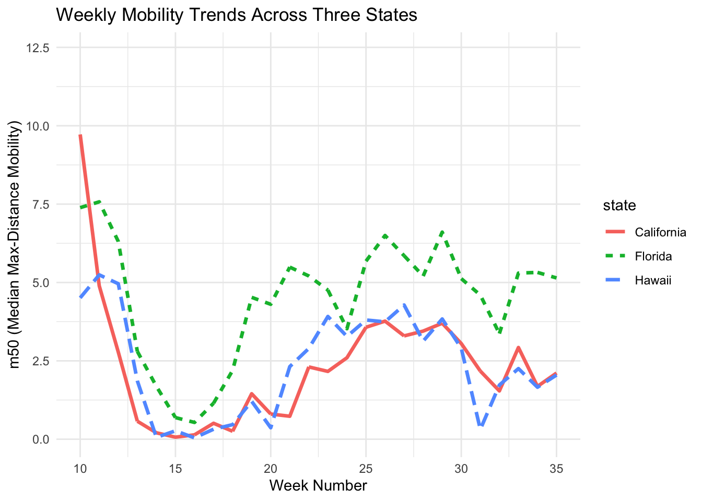

── Attaching core tidyverse packages ──────────────────────── tidyverse 2.0.0 ──
✔ dplyr 1.1.4 ✔ readr 2.1.5
✔ forcats 1.0.0 ✔ stringr 1.5.1
✔ ggplot2 4.0.0 ✔ tibble 3.2.1
✔ lubridate 1.9.4 ✔ tidyr 1.3.1
✔ purrr 1.0.4
── Conflicts ────────────────────────────────────────── tidyverse_conflicts() ──
✖ dplyr::filter() masks stats::filter()
✖ dplyr::lag() masks stats::lag()
ℹ Use the conflicted package (<http://conflicted.r-lib.org/>) to force all conflicts to become errors3. Data pre-processing and visualization
Learning goals
By the end of this tutorial, you will be able to:
- Inspect and prepare datasets for analysis by checking structure and formats
- Clean and pre-process data by creating variables and standardizing dates
- Merge datasets using shared keys such as state and date
- Create basic visualizations using ggplot2, including line graphs and bar charts
- Customize plots with titles, labels, and themes
- Export and save visualizations for reports or presentations
In the previous module, we explored data types and why they matter. R does not always import variables in the format you expect. For example, numbers may be read as character strings. When this happens, you must convert (coerce) the variable to the correct type before analysis and visualization.
Data types and coercion
Data management and pre-processing
This week we practice importing, merging, aggregating, and renaming variables using two datasets from the HDSinRdata package:
covidcases(weekly COVID cases)mobility(daily mobility measures)
Package documentation: https://alicepaul.github.io/health-data-science-using-r/book/working_data_files.html
# A tibble: 6 × 5
state county week weekly_cases weekly_deaths
<chr> <chr> <dbl> <int> <int>
1 California Marin 9 1 0
2 California Orange 9 3 0
3 Florida Manatee 9 1 0
4 California Napa 9 1 0
5 New Hampshire Grafton 9 2 0
6 Washington Spokane 9 4 0# A tibble: 6 × 5
# Groups: state [1]
state date samples m50 m50_index
<chr> <chr> <int> <dbl> <dbl>
1 Alabama 2020-03-01 267652 10.9 76.9
2 Alabama 2020-03-02 287264 14.3 98.6
3 Alabama 2020-03-03 292018 14.2 98.2
4 Alabama 2020-03-04 298704 13.1 89.7
5 Alabama 2020-03-05 288218 14.8 102.
6 Alabama 2020-03-06 282982 17.9 126. Why date formats matter
Both datasets include time, but they record it differently. The COVID dataset uses a week index, while the mobility dataset uses a calendar date. Before merging, we must standardize the time variable.
Note
Date parsing is one of the most common sources of errors in data analysis. If your merge produces lots of missing values, date formats are often the reason.
Pre-processing and merging
# 1) Ensure mobility$date is a real Date object
# If mobility$date is already a Date, this will keep it as Date.
# If it's a character like "2020-04-01", this will parse it correctly.
mobility <- mobility |>
mutate(date = as.Date(date))
# 2) Create a calendar date in covidcases based on the week number
# Week 1 starts on 2019-12-29
covidcases <- covidcases |>
mutate(date = as.Date("2019-12-29") + weeks(week - 1))
# 3) Merge datasets by state and date
merged_data <- mobility |>
left_join(covidcases, by = c("state", "date"))
glimpse(merged_data)Rows: 77,518
Columns: 9
Groups: state [51]
$ state <chr> "Alabama", "Alabama", "Alabama", "Alabama", "Alabama", "…
$ date <date> 2020-03-01, 2020-03-02, 2020-03-03, 2020-03-04, 2020-03…
$ samples <int> 267652, 287264, 292018, 298704, 288218, 282982, 282326, …
$ m50 <dbl> 10.871941, 14.345132, 14.244603, 13.083015, 14.815029, 1…
$ m50_index <dbl> 76.92647, 98.57353, 98.25000, 89.69118, 102.38235, 126.2…
$ county <chr> NA, NA, NA, NA, NA, NA, NA, "Shelby", "Baldwin", "Lee", …
$ week <dbl> NA, NA, NA, NA, NA, NA, NA, 11, 11, 11, 11, 11, 11, 11, …
$ weekly_cases <int> NA, NA, NA, NA, NA, NA, NA, 4, 1, 3, 1, 21, 2, 3, 1, 1, …
$ weekly_deaths <int> NA, NA, NA, NA, NA, NA, NA, 0, 0, 0, 0, 0, 0, 0, 0, 0, 0…Alternatively, you can also use right_join(), innter_join(), full_join()… etc: for more, see: https://alicepaul.github.io/health-data-science-using-r/book/merging_data.html
Data visualization with ggplot2
To make plots more interpretable, we often focus on a subset. Here we compare mobility trends across three states: California, Florida, and Hawaii.
Line graph: trends over time
You can add a title and label the x- and y-axes to make the plot more informative. Of note, m50 represents the median of the max-distance mobility (the distance a typical member of a given population moves in a day).
Warning: Removed 471 rows containing missing values or values outside the scale range
(`geom_line()`).
Saving plots
By default, ggsave() saves figures at 7 × 7 inches. You can change the width and height to customize the figure size.
Tip
If ggsave() does not save where you expect, check your working directory with getwd().
Customizing plot appearance
You can change the size of texts, colors/thickness/types of the lines etc by using different functions.
1. Change the size of texts (increase text size for instane)
m50trend_1 <- ggplot(filtered_data, aes(x = week, y = m50, color = state)) +
geom_line() +
labs(title = "Weekly Mobility Trends Across Three States",
x = "Week Number",
y = "m50 (Median Max-Distance Mobility)") +
theme_minimal() +
theme(
plot.title = element_text(size = 16, face = "bold"), # Larger title
axis.title.x = element_text(size = 14), # X-axis label size
axis.title.y = element_text(size = 14), # Y-axis label size
legend.text = element_text(size = 12), # Legend text size
legend.title = element_text(size = 14) # Legend title size
)
print(m50trend_1)Warning: Removed 471 rows containing missing values or values outside the scale range
(`geom_line()`).
2. Change line thickness (size)
Warning: Using `size` aesthetic for lines was deprecated in ggplot2 3.4.0.
ℹ Please use `linewidth` instead.Warning: Removed 471 rows containing missing values or values outside the scale range
(`geom_line()`).
3. Change Line Type
Warning: Removed 471 rows containing missing values or values outside the scale range
(`geom_line()`).
#4. Assign Colors (scale_color_manual)
m50trend_4 <- ggplot(filtered_data, aes(x = week, y = m50, color = state)) +
geom_line(size = 1.2) +
scale_color_manual(values = c("California" = "blue", "Florida" = "green", "Hawaii" = "pink")) + # name colors here
labs(title = "Weekly Mobility Trends Across Three States",
x = "Week Number",
y = "m50 (Median Max-Distance Mobility)") +
theme_minimal()
print(m50trend_4)Warning: Removed 471 rows containing missing values or values outside the scale range
(`geom_line()`).
Bar graph: comparing states
A bar chart should usually use summarized data (one value per group), not raw daily rows.

Interactive plots with plotly
To create interactive plots, use the plotly package. If you have not installed it yet, run install.packages(“plotly”) first. Interactive plots allow you to hover, zoom, and toggle groups.
Summary:
In this chapter, you practiced inspecting datasets, converting variables, and preparing data for analysis by aligning date formats and merging datasets.
You also created visualizations using ggplot2 to examine trends and compare groups. These steps—cleaning, organizing, and visualizing data—are essential for turning raw data into meaningful insights.
In the next chapter, we will build on these skills by moving from data preparation to data analysis and interpretation.